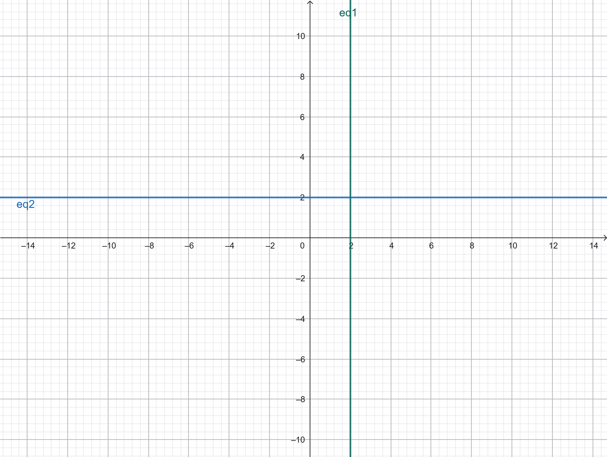
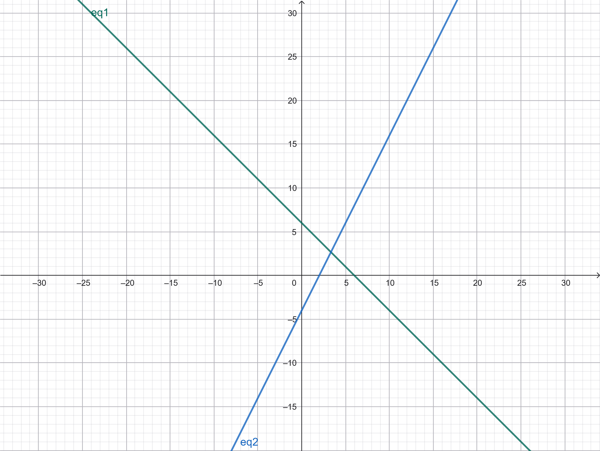
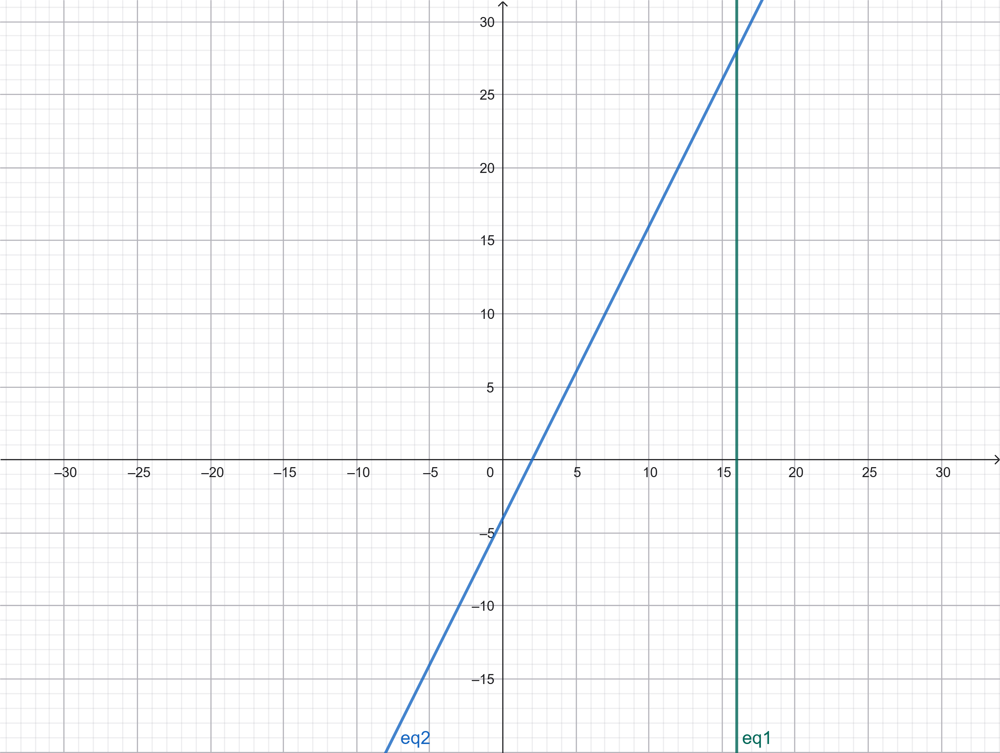

There is a lot more that you can do with outputs (such as including interactive outputs) with your book. For more information about this, see the Jupyter Book documentation
SISTEM PERSAMAAN LINIER#
NAMA : NAYLATUS SYAFA’AH
NIM : 250411100183
MATKUL : KOMPUTASI ALJABAR DAN LINIER
Berikut versi yang sudah dirapikan dan diformat ulang agar rapi saat dicopy ke Jupyter Notebook (Markdown cell):
1.1.1 Sistem Persamaan Linear#
Definisi 1.1.1 Persamaan Linear#
Sebuah ekspresi linear dalam ( n ) peubah (atau variabel) ( x_1, x_2, \dots, x_n ) adalah ekspresi berbentuk:
[ a_1 x_1 + a_2 x_2 + \cdots + a_n x_n ]
di mana ( a_1, a_2, \dots, a_n ) adalah bilangan real tetap.
Sebuah persamaan linear dalam peubah ( x_1, x_2, \dots, x_n ) adalah persamaan yang dapat disederhanakan, hanya dengan menggunakan penjumlahan dan pengurangan, menjadi persamaan berbentuk:
[ a_1 x_1 + a_2 x_2 + \cdots + a_n x_n = b \tag{1.1} ]
yang disebut sebagai bentuk standar.
Suatu persamaan dalam peubah ( x_1, x_2, \dots, x_n ) disebut nonlinear jika tidak dapat disederhanakan ke bentuk (1.1) hanya dengan menggunakan penjumlahan dan pengurangan.
Diberikan suatu persamaan linear dalam bentuk standar (1.1), persamaan tersebut disebut:
Homogen jika ( b = 0 )
Nonhomogen jika ( b \ne 0 )
Contoh 1.1.2. Persamaan Linear dan Nonlinear#
Perhatikan persamaan [ \sqrt{3},x + \sin(5) = 2z - e^4 y. ] Persamaan ini adalah persamaan linear dalam peubah ( x, y, z ). Bentuk standarnya adalah [ \sqrt{3},x + e^4 y - 2z = -\sin(5). ] Karena ruas kanan tidak nol, maka persamaan tersebut adalah nonhomogen.
Persamaan
[ x^2 + y^2 = 1 ]
adalah persamaan nonlinear dalam peubah ( x ) dan ( y ).
Definisi 1.1.3. Sistem Persamaan Linear#
Sebuah sistem persamaan linear (atau sistem linear) adalah himpunan dari persamaan-persamaan linear.
Sebuah sistem linear homogen adalah himpunan dari persamaan-persamaan linear homogen.
Ketika menuliskan suatu sistem yang terdiri dari ( m ) persamaan dalam ( n ) peubah ( x_1, x_2, \dots, x_n ), biasanya setiap persamaan ditulis dalam bentuk standar dan suku-suku yang bersesuaian disejajarkan dalam kolom:
[
\begin{aligned}
a_{11}x_1 + a_{12}x_2 + \cdots + a_{1n}x_n &= b_1
a_{21}x_1 + a_{22}x_2 + \cdots + a_{2n}x_n &= b_2
\vdots \qquad\qquad\qquad\quad & \vdots
a_{m1}x_1 + a_{m2}x_2 + \cdots + a_{mn}x_n &= b_m
\end{aligned}
]
Sistem homogen biasanya dituliskan sebagai:
[
\begin{aligned}
a_{11}x_1 + a_{12}x_2 + \cdots + a_{1n}x_n &= 0
a_{21}x_1 + a_{22}x_2 + \cdots + a_{2n}x_n &= 0
\vdots \qquad\qquad\qquad\quad & \vdots
a_{m1}x_1 + a_{m2}x_2 + \cdots + a_{mn}x_n &= 0
\end{aligned}
]
1.1.2. Contoh Persamaan Linier#
Persamaan linier adalah persamaan yang setiap variabelnya berpangkat satu dan tidak saling dikalikan.
1. Persamaan Linier Satu Variabel#
( 2x + 5 = 9 )
( 7y - 3 = 11 )

# Persamaan 1: 2x + 5 = 9
# 2x = 9 - 5
# x = 4 / 2
x = (9 - 5) / 2
print("Nilai x =", x)
# Persamaan 2: 7y - 3 = 11
# 7y = 11 + 3
# y = 14 / 7
y = (11 + 3) / 7
print("Nilai y =", y)
Nilai x = 2.0
Nilai y = 2.0
2. Persamaan Linier Dua Variabel#
( x + y = 10 )
( 2x - 3y = 5 )

# Persamaan:
# x + y = 10
# 2x - 3y = 5
# Dari persamaan pertama:
# x = 10 - y
# Substitusi ke persamaan kedua:
# 2(10 - y) - 3y = 5
# 20 - 2y - 3y = 5
# 20 - 5y = 5
# -5y = -15
# y = 3
y = 3
x = 10 - y
print("Nilai x =", x)
print("Nilai y =", y)
Nilai x = 7
Nilai y = 3
3. Sistem Persamaan Linier#
( x + y = 6 )
( 2x - y = 4 )

# Persamaan:
# x + y = 6
# 2x - y = 4
# Jumlahkan kedua persamaan:
# (x + y) + (2x - y) = 6 + 4
# 3x = 10
# x = 10 / 3
x = 10 / 3
y = 6 - x
print("Nilai x =", x)
print("Nilai y =", y)
Nilai x = 3.3333333333333335
Nilai y = 2.6666666666666665
Contoh Persamaan Nonlinier#
Persamaan nonlinier adalah persamaan yang tidak memenuhi syarat linier, misalnya variabel berpangkat lebih dari satu, saling dikalikan, atau berada di dalam fungsi tertentu.
1. Persamaan Nonlinier Satu Variabel#
( x^2 + 3x - 4 = 0 )
√x + 2 = 6

import math
# Koefisien
a = 1
b = 3
c = -4
# Diskriminan
D = b**2 - 4*a*c
# Akar-akar
x1 = (-b + math.sqrt(D)) / (2*a)
x2 = (-b - math.sqrt(D)) / (2*a)
print("Akar-akar persamaan kuadrat:")
print("x1 =", x1)
print("x2 =", x2)
Akar-akar persamaan kuadrat:
x1 = 1.0
x2 = -4.0
Catatan 1.1.4#
Anda perlu membiasakan diri dengan penggunaan indeks ganda untuk menuliskan sistem linear secepat mungkin. Berikut cara yang baik untuk memahaminya:
Indeks ( i ) pada ( a_{ij} ) dan ( b_i ) menunjukkan baris ke-( i ) dalam sistem yang ditampilkan, atau secara ekuivalen, persamaan ke-( i ).
Indeks ( j ) pada ( a_{ij} ) menunjukkan kolom ke-( j ) dalam sistem yang ditampilkan, yang berkaitan dengan variabel ke-( j ), untuk ( 1 \le j \le n ).
Definisi 1.1.5. Solusi Sistem Linear#
Sebuah solusi dari persamaan linear
[ a_1 x_1 + a_2 x_2 + \cdots + a_n x_n = b ]
adalah suatu ( n )-tupel ( (s_1, s_2, \dots, s_n) ) bilangan real sehingga penetapan variabel ( x_1 = s_1, x_2 = s_2, \dots, x_n = s_n ) membuat persamaan tersebut benar. Dalam hal ini, kita mengatakan bahwa ( (s_1, \dots, s_n) ) menyelesaikan persamaan tersebut.
Sebuah solusi dari sistem persamaan linear
[
\begin{aligned}
a_{11}x_1 + a_{12}x_2 + \cdots + a_{1n}x_n &= b_1
a_{21}x_1 + a_{22}x_2 + \cdots + a_{2n}x_n &= b_2
\vdots \qquad\qquad\qquad\quad & \vdots
a_{m1}x_1 + a_{m2}x_2 + \cdots + a_{mn}x_n &= b_m
\end{aligned}
]
adalah suatu ( n )-tupel ( (s_1, s_2, \dots, s_n) ) yang merupakan solusi bagi masing-masing dari ( m ) persamaan dalam sistem tersebut.
Dalam hal ini, kita mengatakan bahwa ( (s_1, s_2, \dots, s_n) ) menyelesaikan sistem tersebut.
Diberikan suatu sistem linear, kita akan mencari himpunan semua solusi dari sistem tersebut. Seperti yang akan segera kita lihat, himpunan solusi ini akan memiliki salah satu dari tiga bentuk berikut:
Himpunan solusi kosong, yaitu tidak ada solusi. Dalam hal ini sistem disebut tak konsisten (inconsistent). Sebaliknya, suatu sistem disebut konsisten (consistent) jika memiliki setidaknya satu solusi.
Himpunan solusi berisi tepat satu elemen, yaitu terdapat tepat satu solusi.
Himpunan solusi berisi tak hingga banyak elemen, yaitu terdapat tak hingga banyak solusi.
Contoh 1.1.6. Solusi untuk Sistem-Sistem Sederhana#
Untuk setiap sistem berikut, tentukan himpunan solusinya.
1.#
[
\begin{aligned}
x - y &= 0
x - y &= 1
\end{aligned}
]
2.#
[
\begin{aligned}
x - y &= 0
x + y &= 1
\end{aligned}
]
3.#
[
\begin{aligned}
x - y &= 1
2x - 2y &= 2
\end{aligned}
]
▶ Solusi.
Seperti yang mungkin Anda ingat, suatu persamaan linear (tak trivial) dalam dua peubah menentukan sebuah garis di ( \mathbb{R}^2 ), dan suatu persamaan (tak trivial) dalam tiga peubah menentukan sebuah bidang di ( \mathbb{R}^3 ).
Pengamatan ini memungkinkan kita menggunakan intuisi geometri yang kuat dalam menganalisis sistem persamaan linear dengan dua atau tiga peubah. Karena garis dan bidang juga menjadi sumber contoh penting dalam mata kuliah ini, kita akan mengulas kembali beberapa konsep dasarnya di bawah ini.
# Sistem a
print("=== Sistem a ===")
print("Kesimpulan: Tidak memiliki solusi (inkonsisten)")
# Sistem b
print("\n=== Sistem b ===")
print("Kesimpulan: Tidak memiliki solusi (inkonsisten)")
# Sistem c
print("\n=== Sistem c ===")
print("Kesimpulan: Memiliki tak hingga banyak solusi")
print("Hubungan: 25x - 15y = 10")
print("Bisa ditulis: 5x - 3y = 2")
=== Sistem a ===
Kesimpulan: Tidak memiliki solusi (inkonsisten)
=== Sistem b ===
Kesimpulan: Tidak memiliki solusi (inkonsisten)
=== Sistem c ===
Kesimpulan: Memiliki tak hingga banyak solusi
Hubungan: 25x - 15y = 10
Bisa ditulis: 5x - 3y = 2